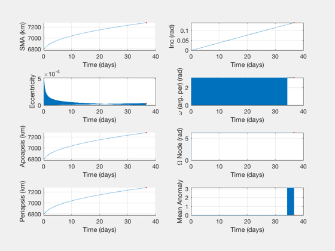

Raise an orbit with a sequence of Hohmann transfers limited by delta-V
Apply a fixed delta-V limit to an orbit raising problem via a sequence of Hohmann transfers. Include inclination change.
Contents
See also:
LTPlaneChange, ComputeHohmannIncDVLimit, OptDIH, OptimizeImpulsiveLVLH, BreakImpulsesByDeltaV, BurnTimesImpulsive
%-------------------------------------------------------------------------- % Copyright (c) 2019 Princeton Satellite Systems, Inc. % All rights reserved. %--------------------------------------------------------------------------
Parameters
r0 = 6378+400; r1 = r0+500; dI = 8*pi/180; maxDV = 0.002; % km/s. compare 0.01 to 0.1 to 0.5 accel = 1e-4; % m/s, for low-thrust comparison % low-thrust analytical (Edelbaum) dVTot = LTPlaneChange( r0, r1, dI ); V0 = VOrbit(r0); V1 = VOrbit(r1); el0 = [r0 0 0 0 0 0]; el1 = [r1 dI 0 0 0 0]; lvlhFrame = OTFrame('lvlh');
Compute a sequence of Hohmann transfers limited by the max DV
dir = sign(r1-r0); % linear inclination change produces least DV with this mechanization expt = 2; dIdH = dI/(r1-r0)^expt; dV = 0; dVs = []; tRs = []; ang = []; dHs = []; dIs = []; betas = []; r = r0; tE = 0; done = false; delI = 0; while ~done % compute a dI and dH within DV limit [dv1,dv2,dH,dI1,dI2] = ComputeHohmannIncDVLimit( r, maxDV, dIdH, r0, expt ); aTrans = (2*r+dH)/2; Vr = VOrbit(r); Vh = VOrbit(r+dH); vA = VOrbit(r,aTrans); vB = VOrbit(r+dH,aTrans); beta1 = acos(min((vA-Vr)/dv1,1)); % imaginary! beta2 = acos((Vh-vB)/dv2); if any(imag([beta1 beta2])) keyboard; end dT = 0.5*Period( aTrans ) + 0.5*Period(r+dH); tE = tE+dT; r = r+dH; if r>r1 % recompute the last segment to reach r1 exactly r2 = r - dH; deltaI = dIdH*(r1-r0)^expt - dIdH*(r2-r0)^expt; % OptDIH; angle? [dv, dv1, dv2, et, Di1] = OptDIH( 0, r2, 0, r1, deltaI ); % MUST CALCULATE BETAS aTrans = (r2+r1)/2; Vr = VOrbit(r2); vA = VOrbit(r2,aTrans); vB = VOrbit(r1,aTrans); beta1 = acos(min((vA-Vr)/dv1,1)); beta2 = acos((V1-vB)/dv2); if any(imag([beta1 beta2])) keyboard; end dT = 0.5*Period( (2*r2+dH)/2 ); tE = tE+dT; done = true; else % with inc change, still less than maxDV end dV = dV + (dv1 + dv2); dVs = [dVs dv1 dv2]; tRs = [tRs 0.5 0.5]; ang = [ang 1 -1]; dHs = [dHs dH]; dIs = [dIs dI1 dI2]; betas = [betas beta1 -beta2]; end tRs(1) = 0; % Build a trajectory - did it work?? nV = length(dVs); burnsPairs = [dVs' zeros(nV,1) betas' tRs']; [absTimes, relTimes, elPairs] = BurnTimesImpulsive( el0, burnsPairs, 3); if nV<50 PlotImpulsiveTrajectory(el0,burnsPairs); end PlotElementsImpulsive(el0,burnsPairs,lvlhFrame); disp('Target; Achieved') disp([el1;elPairs(end,:)]) fprintf('Pairs: %.3f km/s, %.1f days\n',dV,tE/86400)
Target; Achieved
Columns 1 through 3
7278 0.139626340159546 0
7278.27114852636 0.139625513332249 6.28318530717959
Columns 4 through 6
0 0 0
3.14159265358979 3.68332251890223e-05 -2.44911317251365e-16
Pairs: 1.197 km/s, 36.8 days
 Comparisons
aTrans = 0.5*(r0 + r1); vA = VOrbit(r0,aTrans); vB = VOrbit(r1,aTrans); % compare to low thrust [dVlow,~,tLow] = LTPlaneChange( r0, r1, dI, accel*1e-3 ); % compare to single Hohmann [dvOpt,dvO1,dvO2,~,Di1] = OptDIH( 0, r0, 0, r1, dI ); beta1 = acos((vA-V0)/dvO1); beta2 = acos((V1-vB)/dvO2); % compare to single lap solution % NOTE: this is higher than optimal - still need to fix (initial guess) [burns,elOut] = OptimizeImpulsiveLVLH( el0, el1 ); % should be able to define burns exactly but can't get angles right... % burnsTwo = [dvO1 0 beta1 0; dvO2 0 -beta2 0.5]; % [~, ~, elTwo] = BurnTimesImpulsive( el0, burns, OTFrame('lvlh')) [burnsLap] = BreakImpulsesByDeltaV( burns, maxDV, el0 ); [absTimes, ~, elSingle] = BurnTimesImpulsive(el0, burnsLap, lvlhFrame ); fprintf('\n----\nDV limit: %.3f km/s\n',maxDV) fprintf('Delta-I: %g deg\n',dI*180/pi) fprintf('Delta-H: %g km\n\n',r1-r0) fprintf('Hohmann: %.3f km/s (#1 %g, #2 %g)\n',dvOpt,dvO1,dvO2) fprintf('Single-lap: %.3f km/s, %.1f days\n',sum(burns(:,1)),absTimes(end)/86400) fprintf('Low thrust: %.3f km/s, %.1f days (at %g m/s2)\n',dVlow,tLow,accel) fprintf('Hohmann series: %.3f km/s, %.1f days\n',dV,tE/86400) fprintf('\nLow-thrust is %.2f %% higher than Hohmann.\n',(dVlow/dvOpt-1)*100) fprintf('DV pairs is %.2f %% higher than Hohmann.\n',(dV/dvOpt-1)*100) fprintf('DV pairs is %g km/s lower than spiral.\n',(dVlow-dV)) %PlotImpulsiveTrajectory(el0,burnsLap); %--------------------------------------
---- DV limit: 0.002 km/s Delta-I: 8 deg Delta-H: 500 km Hohmann: 1.080 km/s (#1 0.342134, #2 0.737782) Single-lap: 1.087 km/s, 37.1 days Low thrust: 1.671 km/s, 193.4 days (at 0.0001 m/s2) Hohmann series: 1.197 km/s, 36.8 days Low-thrust is 54.70 % higher than Hohmann. DV pairs is 10.84 % higher than Hohmann. DV pairs is 0.473645 km/s lower than spiral.